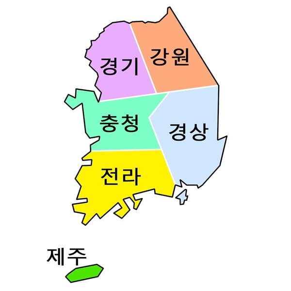

Корейский фонетический алфавит Хангыль состоит из 40 букв. Начнем с согласных.
1.ㄱ- Буква "киёк". Читается как "к" в начале и конце слова, а также на стыке двух глухих согласных. После звонкого согласного или между двумя гласными читается как "г".
2.ㄴ— Буква "ниын". Читается как "н".
3.ㄷ— Буква "тигыт". Читается как "т" в начале и конце слова, а также на стыке двух глухих согласных. После звонкого согласного или между двумя гласными читается как "д".
4.ㄹ— Буква "риыль". Читается как "р" в начале слова и между двумя гласными. В конце слова или перед согласным читается как "ль".
5.ㅁ— Буква "миым". Читается как "м".
6.ㅂ— Буква "пиып". Читается как "п" в начале и конце слова, а также на стыке двух глухих согласных. После звонкого согласного или между двумя гласными читается как "б".
7.ㅅ— Буква "сиот". Перед йотированными гласными (и, ё, ю, я) читается шепеляво, как нечто среднее между "сь" и "щ".
8.ㅇ— Буква "иын". Читается как носовой н (похоже на английский ng). В начале слога эта буква не читается.
9.ㅈ— Буква "чиыт". Читается как "ч" в начале и конце слова, а также на стыке двух глухих согласных. После звонкого согласного или между двумя гласными читается как мягкий "дж".
10.ㅎ— Буква "хиыт". Читается как слабый "х".
Теперь перейдем к гласным.
Существует две базовых гласных: ㅣ (и) и ㅡ (ы).
От них образуются все остальные буквы путем добавления горизонтальных и вертикальных коротких черт.
Это выглядит так: 1.ㅏ— "а" – произносится более открыто, чем русский "а"
2.ㅑ— "я"
3.ㅓ— "о" – произносится как звук, средний между русскими "о" и "э", чтобы его произнести надо сложить губы как для звука «э», а произнести «о»
4.ㅕ— "ё" – произносится как звук, средний между "ё" и "э" чтобы его произнести надо сложить губы как для звука «э», а произнести «ё»
5.ㅗ— "о" – звук, средний между "у" и "о" чтобы его произнести надо сложить губы как для звука «у», а произнести «о»
6.ㅛ— "ё" – звук, средний между "ю" и "ё" чтобы его произнести надо сложить губы как для звука «у», а произнести «ё»
7.ㅜ — "у"
8.ㅠ — "ю"
Однако корейский алфавит имеет одну особенность.Отдельные буквы в нем составляются в слоги. Последние составляются по определенным, весьма несложным правилам:
1.Согласный + гласный. Если гласный имеет длинную горизонтальную черту, то согласный пишется над ним. Если же длинная черта расположена вертикально, согласный пишется слева.
가 냐 더 며 비
고 뇨 두 뮤 브
2.Согласный + гласный + согласный. В этом случае конечный согласный пишется под гласным.
각 냔 덛 몀 빕
곡 뇬 둗 뮴 븝
3.Гласный + согласный. Слоговой знак не может начинаться с гласного. В том случае, если слог начинается с гласного, на письме перед ним ставится буква ㅇ, которая в этом случае не читается.
아, 어, 여, 우, 유
안, 엄, 열, 욱, 입
Диалекты.

В современном корейском языке различают шесть диалектов: центральный, северо-западный, северо-восточный, юго-восточный, юго-западный и диалект о-ва Чечжудо.
경기 [кёнги]
Это самый распространенный тип корейского языка, который используют в столице 서울 [соуль]. Так будут разговаривать большинство людей на телевидении, в фильмах, на радио или в новостях.
Кроме того, этому виду корейского вас также будут обучать различные учебники – он настолько распространен. Почти каждый житель этой страны сможет понять этот диалект, даже если он сам на нем не говорит.
Однако здесь также присутствуют некоторые различия, к примеру, гласный звук 아 [a] произносят как 어 [о], а иногда он даже сливается. К примеру:
그거 알아? [кыго ара?]- стандартный корейский;
그거 알어? [кыго аро?]-кенги; Переводится как "Ты знаешь?"
머리 아파.[мори апа]-стандартный корейский;
머리 아퍼.[мори апо]-кёнги; Что означает «У меня болит голова».
В этом регионе люди обычно разговаривают четко и их легче понять, нежели представителей других областей. Также они обладают гладкой интонацией, к примеру, вот интонация слова 고맙습니다 [комапсымнида] в диалекте Кёнги, которое означает «Спасибо».
강원 [Канвон]
Самый большой город в провинции Канвондо, это Каннын. Эта территория известна своими горами и агрокультурами. К тому же там находится множество ферм.
Побывав там, вы заметите, что некоторые люди этой местности заканчивают предложения с 래(요) [рэ-йо] вместо традиционного 이에요 [и-е-йо] и 예요 [е-йо ], что является формой глагола «быть». К примеру:
제가 미국 사람이에요 -Стандартный корейский [джега мигуг сарамиейо]
제가 미국 사람이래요- диалект «канвон» [джега мигуг сарамирейо] Что означают «Я американец».
Как и в любом диалекте, здесь есть ряд слов, которые вы не услышите в других регионах Кореи. К примеру, в стандартном корейском «ванную комнату» называют 화장실 [хваджаншиль], а в диалекте «канвон» она обозначается как 정낭 (“джоннан”). Чаще всего это слово используют пожилые люди, но оно довольно важное, если вы решите посетить тот регион страны.
Однако нужно отметить, что люди из провинции Канвондо и Сеула не очень отличаются между собой, так как находятся сравнительно близко друг к другу.
충청 [ЧхунЧхон]
Большинство людей с этим диалектом живут в городе 대전 [Тэджон].
Здесь люди разговаривают медленнее, по сравнению с остальными регионами. Из-за этого может показаться, что они более дружелюбные, нежели остальные жители Кореи.
Для этой местности характерно окончание유 [ю]. Его могут использовать вместо стандартного 요 [йо].К примеру:
Стандартный корейский: 안녕하세요! [аннёнхасейо.]- Привет
밥 먹었어요? (“паб могоссойо?”)
Диалект «ЧхунЧхон» : 안녕하세유! [аннёнхасею.]- Привет
밥 먹었어유? [паб могоссою?]- Ты ел?
Но, опять таки, люди из этого региона не очень отличаются от сеульцев так как находятся недалеко друг от друга. Чем дальше вы путешествуете от Сеула, тем больше корейский язык отличается от стандартного.
경상 [Кёнсан]
가가 가가? [ка-ка-ка-ка?] это распространенная фраза, которую вы услышите, если попросите кого-нибудь заговорить с кёнсан диалектом. Она означает «Этот тот самый парень?».
В частности множество людей, заинтересованных в этом диалекте, на самом деле интересуются пусанской речью – тем, как разговаривают в городе Пусан.
Им разговаривают в таких городах как 부산 [Пусан], 울산 [Ульсан], и 대구 [Тэгу]. Он наиболее популярен и известен среди корейцев и даже людей, которые просто изучают корейский язык.
Однако у этого диалекта также есть немного резковатая интонация. К примеру, слово 고맙습니데이 [комапсыбнидеи], которое означает «Спасибо».
Здесь произношение очень не типично для своего диалекта, но легче всего определить это можно с помощью слуха.
Мужчин, которые разговаривают с таким диалектом, считают более мужественными, а женщин особенно милыми.
Стандартный корейский: 나랑 밥 먹으러 갈래? [наран паб могурокалле?]
Диалект «Кёнсан»: 나랑 밥 무러 갈래? [наран паб мурокалле?]. Переводится как «Хочешь поесть со мной?»
Однако диалекты не только влияют на то, как человек разговаривает, но и на его общее поведение. К примеру, люди, живущие в регионе Кёнсан, разговаривают более непосредственно, нежели жители остальных областей. Их предложения могут быть короче, что удобно для людей, изучающих корейский язык, ведь они могут вложить один и тот же смысл в небольшое предложение. Вот пример трех высказываний, которые мог бы сказать отец из Кёнсан своей жене.
Стандартный корейский: 밥 먹자! 우리 아이는 어때요? 자러 가자! [Паб мокжа! Ури аинын оттэё? Чжаро кажа!]- Давай поедим! Как наш ребенок? Пошли спать!
Диалект «Кёнсан»: 밥도! 아는? 자자! [паб до! Анын? Чжаджа!]- Давай поедим! Как наш ребенок? Пошли спать!
В этом регионе вы также можете услышать несколько нестандартных слов. К примеру:
Стандартный корейский: 1)의사 [ый-са]; 2) 사과 [са-гва]
Диалект «Gyeong-sang»: 1)이사 [и-са]; 2) 사가 [са-га]
Перевод: 1) доктор; 2) яблоко;
전라 [Чол-ла]
Чолла также известна как호남 [Хонам]. Это обозначает «К югу от озера», так как провинция расположена к югу от нескольких озер.
В этом регионе вы сможете услышать такое окончание глагола как부러 [буро] или глагол 부리다 [бурида]. Оно может придать предложению особый акцент. Вот пример:
Стандартный корейский: 좋아요! (джоайо)
Диалект «Чолла»: 좋아부리네! (джоабурине)- со значением "Это здорово!"
Вы также можете услышать такое окончание предложения как ~쇼 [щё], вместо ~세요 [се-йо]. К примеру:
Стандартный корейский: 안녕하세요! [аннёнхасейо]
Диалект «Jeol-la»: 안녕하쇼! [аннёнхащё!]- переводится как «Привет!»
제주 [Чеджу]
Трудно назвать диалект «Чеджу» диалектом – он настолько отличается от стандартного корейского, что больше похож на отдельный язык. Больше 75% этого говора вообще не существует в традиционном корейском.
Стандартный корейский: 뭐라고 말하는지 모르겠죠? [Мвораго мальханынджи морыгетджё?]-Ты знаешь, о чем я говорю, не так ли?
안녕하십니까?-[аннёнхашимникка?]-Привет (Как дела?).
Диалект «Je-ju»: 무신 거옌 고람 신디 몰르쿠게? [мушин коен корам шинди моллыкхуге?]-Ты знаешь, о чем я говорю, не так ли?
펜안하우과? [пхенанхаугва?]-Привет (Как дела?).
Но преимущество этого диалекта в том, что вам не нужно волноваться из-за речи на столь почтенном корейском (использование ~세요 [сейо]). Этим говором вы можете разговаривать как со старшими людьми, так и со своими ровесниками. Но это сработает только в том случае, если вы разговариваете на Чежду диалекте, а не на стандартным корейским в регионе Чеджу.
В зависимости о того, с кем вы разговариваете, откуда они, какое у них воспитание и сколько им лет, речь каждого из жителей этой страны будет отличаться. Воспользуйтесь этой информацией как проводником, а не книгой с правилами, ведь в диалектах нет правил, это лишь разговорный язык.
В корейском языке (также как и в японском) существует сложная система выражения вежливости. Говорящий всегда должен иметь в виду свою социальную позицию по отношению к собеседнику, а также к тому человеку, о котором идет речь. Это обеспечивается системой окончаний, которые добавляются к глаголам и прилагательным. Так, глагол 가다 (када) – идти может использоваться в такой (словарной) форме исключительно в письменном тексте, не обращенном к собеседнику (напр. косвенная речь в литературном произведении). В устном общении или письме при общении с близко знакомым человеком будет использоваться форма 가 (ка), при общении с малознакомым человеком, или человеком, находящимся на более высокой ступени социальной иерархии, обычно используется форма 가요 или еще более вежливая 갑니다.
Изменение глаголов и прилагательных по степеням вежливости.
Официально-вежливый стиль: образуется путем прибавления к 1-й основе глагола окончания ㅂ니다 (мнида) после гласных и 습니다 (сымнида) после согласных. В вопросительных предложениях используются окончания ㅂ니까 (мникка) и 습니까 (сымникка) соответственно:가다 – 갑니다 – 갑니까[када – камнида - камникка]- идти;읽다 – 읽습니다 – 읽습니까[икта – иксымнида - иксымникка]- читать.
Неофициально-вежливый стиль: именно этот стиль советуют использовать иностранцам, если, конечно, вы не разговариваете с высокопоставленной персоной, глубоким старцем или своим корейским приятелем или подругой. Образуется путем прибавления ко 2-й основе глагола окончания 요, при этом изменения окончания в вопросительной форме не происходит. 가다 – 가요[када – каё]- идти;읽다 – 읽어요[икта – ильгоё]- читать.
Просторечный стиль (панмаль): используется либо по отношению к близким друзьям, либо по отношению к низшим в социальной иерархии. Обычно для его образования используется 2-я основа глагола без добавления каких-либо окончаний: 가다 – 가[када - ка]- идти;
읽다 – 읽어[икта – ильго].
В вопросительных предложениях в панмале может присоединяться окончание 냐 или 니, прибавляемое к 1-й основе глагола : 어디 가냐 (оди каня) – куда идешь?
Иногда в высоких стилях вежливости происходит полная замена глагола на его вежливый аналог:
있다 – 계시다[итта - кесида]-находиться, быть;
먹다 – 잡수시다[мокта– чапсусида]= есть – вкушать;
주다 – 드리다[чуда – тырида]= давать – преподносить;
자다 – 주무시다[чада – чумусида]= спать – почивать.
Показателем вежливости является также суффикс 시 (си), который может использоваться и с низшими степенями вежливости, если разговор идет о человеке, находящемся на более высокой ступени социальной иерархии, например, когда два студента-однокурсника говорят о своем профессоре:
박교수님께 벌써 가시오?[Пак кёсу-ним-кке польссо касио?]- Профессор Пак уже ушел?
Существуют также вежливые аналоги существительных, например: 집 – 댁 (чип – тэк) – дом. Форма «тэк» будет более вежливой, чем форма «чип». Широко употребляются вежливые формы для слов, обозначающих родственников. Так, своего отца можно назвать 아버지 (абоджи), но чужого – только 아버님 (абоним)
На этом я прощаюсь с вами. Надеюсь, вам было интересно и продолжите дальше изучать корейский язык. Уверена, у вас получится, удачи!